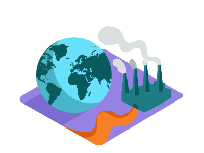

Garantizar el acceso a una energía asequible, segura, sostenible y moderna para todas las personas. Centrado en el sector energético busca garantizar el acceso universal a una energía asequible, segura, sostenible y moderna. Este ODS está íntimamente relacionado con el ODS 13 Adoptar medidas urgentes para combatir el cambio climático y sus efectos garantizando el acceso a la energía haciéndolo un servicio asequible para toda la ciudadanía. La alerta climática planteada por la comunidad científica ha hecho que, en el horizonte 2020- 2050, las emisiones de CO2 se constituyan como el principal vector de transformación del sector de la energía. La descarbonización sistemática y profunda del sistema energético es el horizonte político prioritario a lograr en el siglo XXI. El Acuerdo de París adoptado el 12 de diciembre de 2015, y ratificado posteriormente por España, supone el marco de referencia en el que se ha de desarrollar la política energética. Hemos pasado del debate sobre el objetivo climático, al de la estrategia que permita alcanzarlo y sus implicaciones. A diferencia de la Unión Europea (UE-28), España no ha conseguido todavía desacoplar en términos absolutos el crecimiento de su economía de las emisiones de gases de efecto invernadero. Una mirada al mix energético español resulta clarificadora sobre este comportamiento. La paulatina penetración de fuentes renovables implementaría beneficios, tanto de carácter medioambiental, en forma de reducción de emisiones, como de carácter económico, traducidos en generación de empleo, creación de nuevo tejido empresarial, reducción de la dependencia exterior y la mejora de la balanza de pagos.
Entre 1990 y 2010, la cantidad de personas con acceso a energía eléctrica aumentó en 1.700 millones. Sin embargo, a la par con el crecimiento de la población mundial, también lo hará la demanda de energía accesible. La economía global dependiente de los combustibles fósiles y el aumento de las emisiones de gases de efecto invernadero están generando cambios drásticos en nuestro sistema climático, y estas consecuencias han tenido un impacto en cada continente.
Desde 2011 y gracias a los esfuerzos por promover la energía limpia, más de un 20 por ciento de la energía mundial es generada por fuentes renovables. Sin embargo, una de cada cinco personas aún no tiene acceso a la electricidad. Debido que la demanda sigue en aumento, es preciso un incremento considerable en la producción de energía renovable en todo el mundo.
Para garantizar el acceso universal a electricidad asequible para 2030, es necesario invertir en fuentes de energía limpia, como la solar, eólica y termal. La adopción de estándares eficaces en función del costo en una variedad de tecnologías también podría reducir en 14 por ciento el consumo mundial de electricidad en los edificios. Esto equivale a la energía generada por unas 1.300 centrales medianas cuya construcción se podría evitar.
Expandir la infraestructura y mejorar la tecnología para contar con energía limpia en todos los países en desarrollo, es un objetivo crucial que puede estimular el crecimiento y a la vez ayudar al medio ambiente.